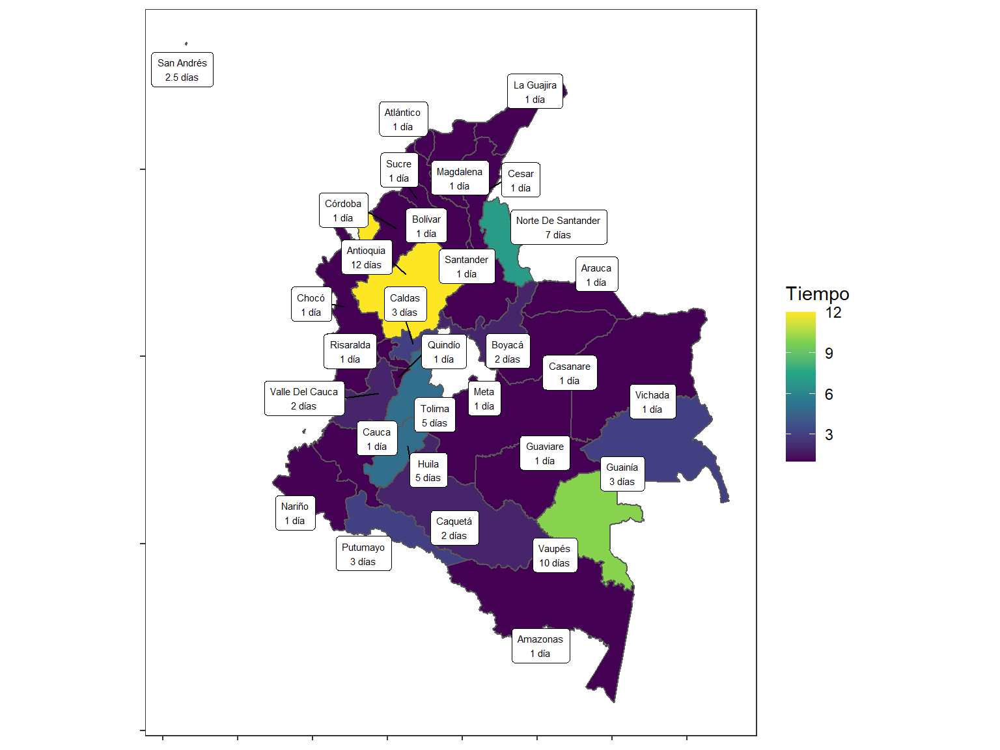
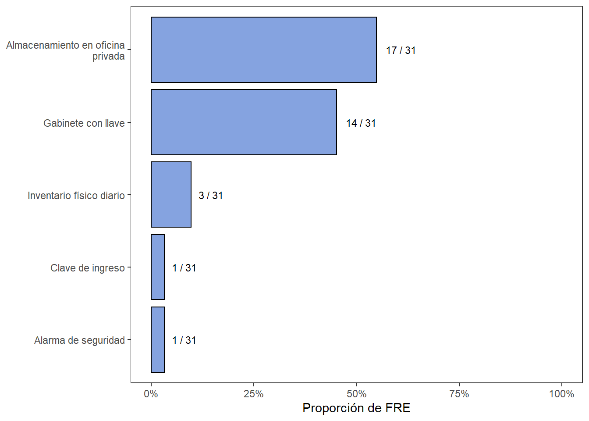

5.4 Procesos relacionados a los recetarios
5.4.1 Recepción de recetarios
En relación con la Figura 5.10A, se puede observar que 17 de los FRE entrevistados confirmaron que, sí reciben los recetarios diligenciados de las instituciones inscritas en su despacho dentro de los tiempos estimados, ver Figura 5.10B. Esto se realiza con el fin de corroborar los informes allegados correspondientes al anexo 13 que se entregan mensualmente.
Figura 5.10: Recepción de recetarios. Panel A. Porcentaje de entes territoriales que reciben recetarios oficiales recibidos prescritos/diligenciados. Panel B. Tiempo de recepción de recetarios oficiales desde IPS.

Los recetarios entregados deben revisarse exhaustivamente para evidenciar el buen uso de estos. Junto con los recetarios se trae el anexo 13 para corroborar que los medicamentos formulados coincidan con los valores prescritos en cada uno de los mismos. Esta tarea se realiza en 17 de los 31 departamentos visitados, sin embargo, es una actividad demorada debido a la: (a) falta de personal en los entes territoriales y (b) cantidad de instituciones inscritas y/o médicos prescriptores que hay en el departamento.
El resto de los departamentos (57%) no reciben los recetarios prescritos en físico, entre las razones, la más frecuente está relacionada con la capacidad de almacenamiento del FRE de este tipo de documentación, que suele ser muy limitado o no se cuenta con el mismo. En dichos casos, los FRE han optado por emitir circulares, solicitando a las entidades y médicos prescriptores inscritos que mantengan la custodia de los talonarios diligenciados, como parte de la historia clínica de los pacientes, hasta que el FRE realice la visita de inspección, vigilancia y control. Una vez allí, se realiza un muestreo para verificar que las fórmulas prescritas en un determinado tiempo concuerden con las cantidades de medicamentos reportados en los informes mensuales.
5.4.2 Venta de recetarios oficiales
El proceso de venta de recetarios oficiales se lleva a cabo de forma estandarizada en el grueso de los FRE del país, siguiendo el procedimiento descrito en la Figura 5.11. Allí se observa se forma generalizada la primera instancia del proceso, la cual es la solicitud de cotización de recetarios oficiales al FRE. Esta puede ser de forma personal o vía correo electrónico. Posterior a ello, el ente territorial realiza su estudio interno de disponibilidad y responde a la institución interesada con la cantidad que puede vender, de ser el caso en que no disponga del total de recetarios que el establecimiento farmacéutico requirió.
Figura 5.11: Proceso de venta de recetarios oficiales
Según la Resolución 1479 de 20061 - articulo 3, cada FRE debe contar con una cuenta bancaria en donde administre sus operaciones. En esta cuenta es donde la institución interesada deposita el monto de la cotización realizada. Finalmente, se radica ante el FRE el soporte de pago y los documentos de la cotización para que sean enviados al área de contabilidad del ente territorial, y los recetarios despachados al establecimiento farmacéutico que los requiere.
Este proceso de venta de recetarios oficiales se desarrolla de forma rápida como lo demuestra la Figura 5.12. En la mayoría de departamentos tarda entre 1 y 2 días concretar la venta, tiempo que es determinado realmente por el establecimiento y cuanto demore en hacer el pago bancario a la cuenta del FRE. Los casos particulares en que el proceso toma hasta 5 días o más, como es el caso particular del FRE de Norte de Santander, se da por el alto riesgo de desvíos y posibilidad de fraudes de recetarios oficiales, por lo que los funcionarios del ente territorial, se toman una semana para realizar exhaustivamente la revisión del comprador. Por otro lado, en los FRE de Huila, Tolima y Vaupés, este comportamiento se presenta principalmente por falta de personal que pueda abarcar el total de las actividades que debe desarrollar el ente territorial, panorama común dentro de lo observado a lo largo de los acompañamientos técnicos del Proyecto de inversión Misión PRI 1901 a los distintos FRE de la nación, en donde por carencia de personal suficiente se tienen que priorizar unas tareas y relegar otras actividades del ente territorial igualmente valiosas para la salud pública de la región.
Figura 5.12: Tiempo de demora en la venta de recetarios oficiales a clientes
5.4.3 Seguimiento a uso de recetarios
La Figura 5.13 muestra los campos de información recolectada en bases de datos por los FRE al momento de realizar la venta de un recetario oficial, la información recolectada permite conocer entre otras cosas:
Datos básicos de las entidades y prescriptores inscritos en el FRE.
Unidades consumidas y su respectivo valor.
Datos de identificación de los recetarios.
Número de talonarios que se distribuyen en los respectivos departamentos.
Figura 5.13: Proporción de FRE que diligencian campos en BD de venta de recetarios

Durante la jornada de inmersión territorial, se puedo observar que los FRE utilizan dichas bases con dos propósitos principales:
Realizar estimaciones de necesidad de recetarios, control de inventarios y control en las cantidades que los compradores adquieren. Esto permite llevar un seguimiento del consumo promedio de las entidades. Este control permitió a los FRE realizar un seguimiento a posibles desvíos o anormalidades en los consumos. Por ejemplo, con el inicio de la pandemia el consumo de ROs y MME aumentó en la mayoría de los departamentos, por lo que los FRE tuvieron que fortalecer el trabajo en equipo con las entidades para mitigar desabastecimientos.
Evitar fraudes o falsificaciones al realizar un control en el manejo de talonarios, y contrastando la información de las bases con la entregada o solicitada durante visitas.
Se observó que la mayoría de FRE (proporción mayor a 50% en la Figura 5.13) llevaban un control de información con el fin de identificar a los compradores (Nombre del comprador persona o institución) y las cantidades adquiridas – Unidades compradas. Se almacenan datos de contacto, como dirección o teléfono en tan solo 25% de los FRE. Por otro lado, se evidenció que la mayoría de departamentos (83%) optan por realizar seguimiento a los recetarios con el código de serial, debido a que estos son únicos en cada recetario.
Así mismo, se observaron otros tipos de campos almacenados por los FRE (opción Otros) en la venta de recetarios. Entre estos otros se encuentra: (a) consecutivos de las facturas emitidas en cada compra, (b) registro REPS, (c) saldo de recetarios oficiales tras la compra, o (d) códigos de recetarios oficiales prescritos allegados para su revisión. Algunos FRE cierran el ciclo de control del RO, en la misma base de datos, al relacionar los RO prescritos que son devueltos para su revisión.
Los FRE realizan una serie de actividades para el seguimiento de uso de los recetarios. En la Figura 5.14 se muestra las distintas acciones realizadas por parte de los FRE para el seguimiento al manejo de los RO. La actividad de control más realizada, alrededor de un 70%, es la visita a las instituciones y médicos independientes inscritos en el FRE. La dinámica principal de la visita consiste en actividades propias de IVC, y a su vez en la revisión del anexo 13 junto con otros informes particulares vs las copias de las prescripciones de los RO que las entidades tengan disponibles.
Las visitas a instituciones han permitido evidenciar en algunos departamentos, falencias en el uso adecuado de los RO, como por ejemplo prescripciones en las cuales se formulan antibióticos u otros medicamentos en conjunto con MME o solos, así mismo se tienen casos donde se encuentran recetarios en blanco, pero con firma y sello del médico prescriptor, generando un alto riesgo de desvío en las instituciones.
En segundo lugar, se encuentra la verificación de base de ventas. Esta actividad se explicó al mencionar que las mismas se utilizan para el control y seguimiento de posibles desvíos o anormalidades en los consumos.
Las actividades anteriormente descritas se consideran actividades de seguimiento pasivas, caso contrario a la verificación de recambios. Esta actividad se realiza en un 22% del territorio Nacional, la cual consiste en autorizar la venta de recetarios a las entidades y/o médicos prescriptores solo sí devuelve los recetarios comprados anteriormente. Por parte de los departamentos se aclara que no es necesarios vender la misma cantidad de recetarios que el comprador devuelve.
Otras actividades de seguimiento activo al manejo de RO son el seguimiento a las denuncias, las cuales tienen una proporción menor al 5%. Finalmente, el acompañamiento permitió evidenciar que el 15% de los FRE no realizan ningún tipo de actividad de seguimiento al uso de los ROs, tan solo cumpliendo con la presentación de informes exigidos por la normativa vigente.
Figura 5.14: Actividades realizadas por el FRE para el seguimiento del uso de recetarios

5.4.4 Archivo de recetarios
Durante el acompañamiento se complementó como recomendación a los FRE, se considerará alinearse a lo expresado en la Circular 009 de 2015 del FNE, donde se difunde la buena práctica de implementar bases de retención documental y gestión de archivo9. La frecuencia con la cual se reciben los recetarios oficiales a los FRE desde las entidades y médicos prescriptores inscritos se observa en la Figura 5.10B La frecuencia de recepción de recetarios guarda relación con la información analizada en el punto anterior. Se tiene que 13 FRE reciben los 10 primeros días del mes los recetarios oficiales prescritos conforme a lo solicitado a las instituciones de cada departamento, mientras que los otros 4 FRE no han estandarizado el tiempo de entrega y reciben los recetarios oficiales a lo largo del mes, asegurando su recepción mediante recordatorio por correo electrónico o comunicación telefónica, si llega a ser requerido. Se tiene que 17 de 31 FRE reciben los recetarios oficiales desde IPS.
Complementando la información reportada en la Figura 5.10 y en la Figura 5.15, se relacionó el tiempo de archivo que los FRE que si reciben los recetarios oficiales los almacenan, obteniendo que 10 FRE los almacenan por un periodo mayor a 5 años. Durante las jornadas de inmersión territorial se pudo observar que este tiempo de almacenamiento, en la mayoría de los casos, es por desinformación en los FRE, puesto que no se tiene presente el tiempo que se deben guardar estas copias, y al considerarlas parte de la historia clínica de un paciente estiman guardarlas hasta por 10 años, superando en muchos casos la capacidad de archivo de los FRE.
Figura 5.15: Tiempo de archivo de los recetarios oficiales en los FRE

En otros casos, la intención de archivo se acoge a las medidas establecidas por las gobernaciones, en las cuales se pide un archivo de 20 años para documentación critica, según las tablas de retención documental gubernamental10. Otros FRE en cambio establecieron protocolo de archivo y una vez cumplido el periodo de almacenamiento, por supuesto, posterior revisión, los recetarios oficiales son destruidos.
Como se mencionó previamente durante el acompañamiento se compartió la Circular 009 de 20159, la cual en su Artículo Primero expresa:
“Que las autoridades administrativas, los fabricantes, los comerciantes, los hombres de ciencia, las Instituciones científicas y los hospitales lleven registros en que consten las cantidades de cada estupefaciente fabricado, y de cada adquisición y destino dado a los estupefacientes. Dichos registros serán conservados por un periodo de dos años por lo menos. Cuando se utilicen talonarios (artículo 30, inciso 2 b) de recetas oficiales, dichos talonarios se conservarán también durante un periodo de dos años por lo menos”.
En este sentido, los FRE buscarán adoptar dicha medida para liberar espacio de almacenamiento, con el fin de que pueda ser aprovechado para otro tipo de insumos.
Debido a que los recetarios oficiales son el requisito obligatorio para la dispensación de medicamentos de control especial o monopolio del estado, se ha visto la necesidad de resguardar los talonarios en áreas seguras y de acceso limitado para evitar robos o desvíos. En la Figura 5.16 se observa que todos los departamentos han implementado algún tipo de medida de seguridad para el control de los recetarios.
Figura 5.16: Proporción de FRE con medidas de seguridad implementada en almacenamiento de recetarios
La mayoría de los FRE, más del 70%, han optado por almacenar los recetarios oficiales en gabinetes u oficinas privadas con acceso limitado al personal del FRE, con el objetivo de garantizar la custodia de los mismos y evitar pérdidas, de preferencia en espacios que además aseguren su buen estado físico. Hasta el momento, estas medidas de seguridad han sido suficientes puesto que durante el acompañamiento no se encontraron casos en los cuales los FRE hayan mencionado históricos de situaciones de robo o pérdida de recetarios. Sin embargo, durante el proyecto de inversión, especialmente durante las visitas a las que se tuvo acceso presencial o imágenes de las oficinas de almacenamiento, se pudo evidenciar que, si bien los recetarios están almacenados en oficinas privadas o gabinetes con llave, las condiciones para tal fin no son las adecuadas, se tienen situaciones donde se comparten espacios con los medicamentos, y dichos espacios no son suficientes, por lo que se deben disponer en lugares estrechos de las oficinas del FRE.
Adicionalmente, los FRE suelen solicitar mejoras en la infraestructura o seguridad de las oficinas, pero la inversión se ve limitada por autorización y/o estudio de recursos económicos para estos proyectos financiada en la mayoría de los casos por las gobernaciones. Debido a lo anterior, se hace necesario una mejoría en la infraestructura para la mayoría de los Fondos Rotatorios y mejorar las prácticas de almacenamiento.
Por último, sólo 3 departamentos realizan un inventario físico diario, asegurando que los recetarios estén completos. Esta actividad suele hacerse revisando las cajas donde son traídos los recetarios, observando que la cantidad de estas no estén alteradas.